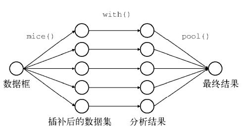
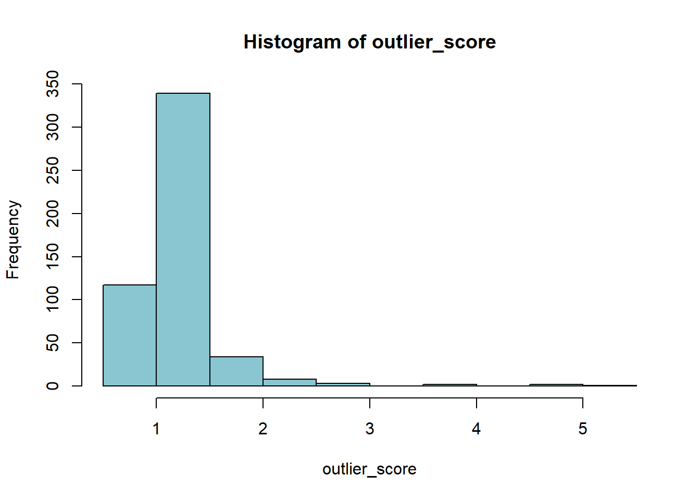
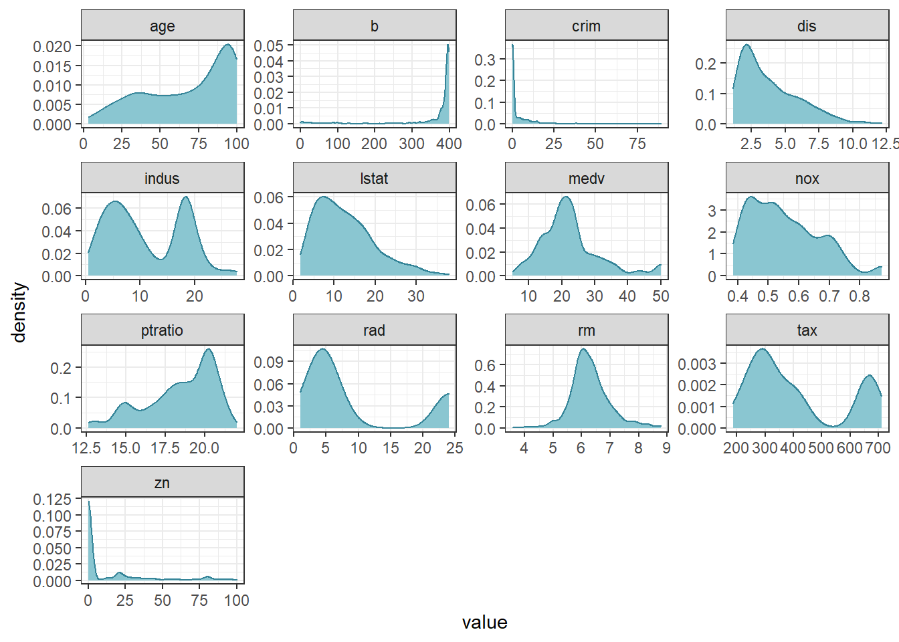
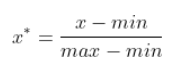
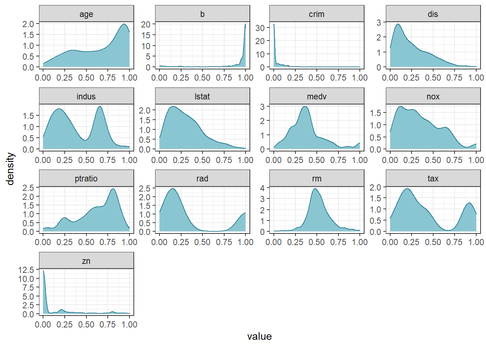
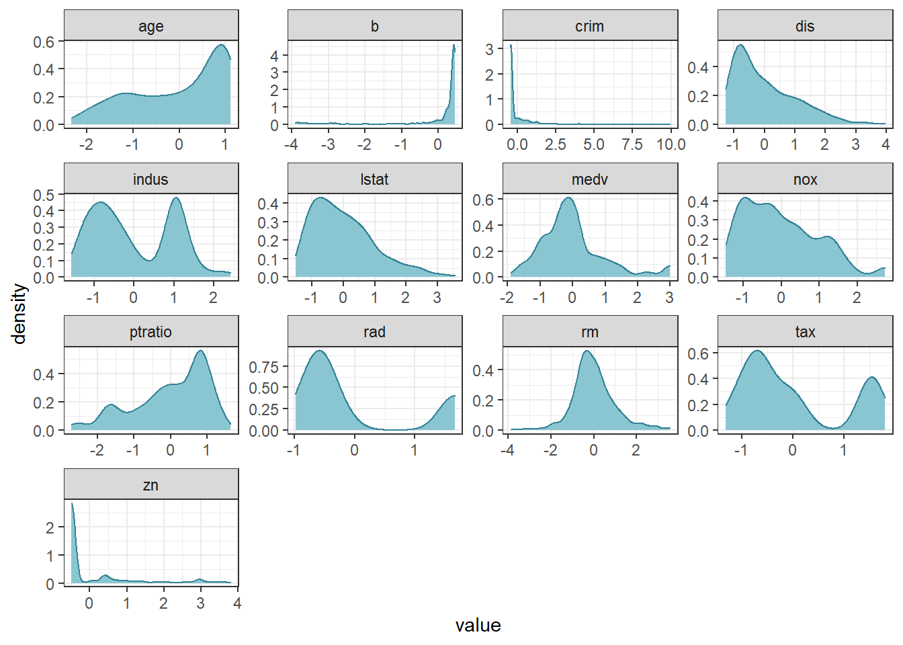

第 2 章 数据清洗与准备

Task 02共计6个知识点，预计需学习5~8小时，请安排好学习任务。
环境配置
library(mlbench) # 将会使用到包中的BostonHousing数据集
library(funModeling) # 探索性数据分析工具包，本节内容中将会使用到它的status()函数，打印整体数据质量
library(tidyverse) # 数据转化工具包，本节内容中将会使用它包含的dplyr中的管道函数 %>%
library(VIM) # 缺失值可视化工具包，本节内容中将会使用到它的aggr()函数
library(mice) # 缺失值处理工具包，本节内容会使用它来进行多重插补
library(Rlof) # 用于LOF异常值检测方法，本节内容将会使用到它的lof()函数
library(fastDummies) # 用于生成dummy的包，本节内容将会使用到它的dummy_cols()函数
library(sjmisc) # 用于生成dummy的包，本节内容将会使用到它的to_dummy()函数
library(MASS) # 基于此包进行box-cox转换
library(dlookr) # 本节内容将会使用到它的transform()函数案例数据
本节内容将会使用到两个数据集。
数据集1 h1n1流感问卷数据集
数据说明
目前提供的数据集来自关于h1n1流感调查问卷的部分内容，可以从这个网站上看到具体字段的详细说明：https://www.drivendata.org/competitions/66/flu-shot-learning/page/211/
数据集包含26,707个受访者数据，共有32个特征+1个标签（是否接种h1n1疫苗）。
加载并查看部分数据
首先加载数据，了解数据集大小。
h1n1_data <- read.csv("./datasets/h1n1_flu.csv", header = TRUE)
dim(h1n1_data)## [1] 26707 33注：为了简化本章的示例，我们在这32个特征中，筛选出了10个特征，作为一个子集，来学习如何使用R做数据清洗与准备。如有兴趣，可以把下面这块筛选去掉，自己用完整数据集做一次探索。
h1n1_data <- h1n1_data[, c(1, 3, 11, 12, 15, 16, 19, 20, 22, 23, 33)]
head(h1n1_data)## respondent_id h1n1_knowledge doctor_recc_h1n1 chronic_med_condition
## 1 0 0 0 0
## 2 1 2 0 0
## 3 2 1 NA 1
## 4 3 1 0 1
## 5 4 1 0 0
## 6 5 1 0 0
## health_insurance opinion_h1n1_vacc_effective age_group education
## 1 1 3 55 - 64 Years < 12 Years
## 2 1 5 35 - 44 Years 12 Years
## 3 NA 3 18 - 34 Years College Graduate
## 4 NA 3 65+ Years 12 Years
## 5 NA 3 45 - 54 Years Some College
## 6 NA 5 65+ Years 12 Years
## sex income_poverty h1n1_vaccine
## 1 Female Below Poverty 0
## 2 Male Below Poverty 0
## 3 Male <= $75,000, Above Poverty 0
## 4 Female Below Poverty 0
## 5 Female <= $75,000, Above Poverty 0
## 6 Male <= $75,000, Above Poverty 0数据集2 波士顿房价数据集
数据说明
数据集来自mlbench包，请提前装好。数据字段说明可从网址查看：https://blog.csdn.net/weixin_46027193/article/details/112238597
数据集包含506条房价信息，共有13个特征+1个预测字段（房屋价格）。
加载并查看部分数据
data(BostonHousing)
dim(BostonHousing)## [1] 506 14head(BostonHousing)## crim zn indus chas nox rm age dis rad tax ptratio b lstat
## 1 0.00632 18 2.31 0 0.538 6.575 65.2 4.0900 1 296 15.3 396.90 4.98
## 2 0.02731 0 7.07 0 0.469 6.421 78.9 4.9671 2 242 17.8 396.90 9.14
## 3 0.02729 0 7.07 0 0.469 7.185 61.1 4.9671 2 242 17.8 392.83 4.03
## 4 0.03237 0 2.18 0 0.458 6.998 45.8 6.0622 3 222 18.7 394.63 2.94
## 5 0.06905 0 2.18 0 0.458 7.147 54.2 6.0622 3 222 18.7 396.90 5.33
## 6 0.02985 0 2.18 0 0.458 6.430 58.7 6.0622 3 222 18.7 394.12 5.21
## medv
## 1 24.0
## 2 21.6
## 3 34.7
## 4 33.4
## 5 36.2
## 6 28.72.1 重复值处理
在某些情况下，我们需要对数据进行去重处理。unique()函数可以对数据进行整体去重，distinct()函数可以针对某些列去重。
# 整体去重
h1n1_data_de_dup1 <- unique(h1n1_data)
# 指定根据列respondent_id,h1n1_knowledge去重，并保留所有列
h1n1_data_de_dup2 <- distinct(h1n1_data, respondent_id, h1n1_knowledge, .keep_all = T)2.2 缺失值识别与处理
现实环境中，由于数据来源及搜集过程，可能有各种不规范，导致数据往往会存在缺失。缺失值识别与处理，无论是在统计还是数据管理中，往往是数据清洗的第一步。
2.2.1 缺失值识别
2.2.1.1 常用识别方法
在R语言中，惯用会把缺失值表示为NA，一般可使用is.na(a)，!complete.cases(a)来识别a是否为缺失值。
# 假设定义的一个变量中存在缺失值
y <- c(1, 2, 3, NA)
# 用is.na在识别是否为缺失值
is.na(y)## [1] FALSE FALSE FALSE TRUE# 用!complete.cases()在识别是否为缺失值
!complete.cases(y)## [1] FALSE FALSE FALSE TRUE2.2.1.2 缺失值统计
统计缺失值总数。
# 数据集中总缺失数据量
sum(is.na(h1n1_data))## [1] 15912# 数据集中某一列缺失数据量
sum(is.na(h1n1_data["h1n1_knowledge"]))## [1] 116如果想按行或按列统计，可以写函数。
pMiss <- function(x) {
sum(is.na(x)) / length(x) * 100
}
apply(h1n1_data, 2, pMiss) # 按列统计缺失比率%## respondent_id h1n1_knowledge
## 0.0000000 0.4343431
## doctor_recc_h1n1 chronic_med_condition
## 8.0877673 3.6357509
## health_insurance opinion_h1n1_vacc_effective
## 45.9579885 1.4640356
## age_group education
## 0.0000000 0.0000000
## sex income_poverty
## 0.0000000 0.0000000
## h1n1_vaccine
## 0.0000000# apply(h1n1_data,1,pMiss) #按行统计缺失比率%或调用一些现成的包。比如，我们可以使用funModeling包中的status()函数，直接观测案例数据中包含的0值，缺失值（NA），在每个特征中的分布情况。以h1n1 flu数据集为例：
data_quality <- status(h1n1_data)
data_quality %>% mutate(across(where(is.numeric), ~ round(., 3))) # 保留4位小数## variable q_zeros p_zeros q_na
## respondent_id respondent_id 1 0.000 0
## h1n1_knowledge h1n1_knowledge 2506 0.094 116
## doctor_recc_h1n1 doctor_recc_h1n1 19139 0.717 2160
## chronic_med_condition chronic_med_condition 18446 0.691 971
## health_insurance health_insurance 1736 0.065 12274
## opinion_h1n1_vacc_effective opinion_h1n1_vacc_effective 0 0.000 391
## age_group age_group 0 0.000 0
## education education 0 0.000 0
## sex sex 0 0.000 0
## income_poverty income_poverty 0 0.000 0
## h1n1_vaccine h1n1_vaccine 21033 0.788 0
## p_na q_inf p_inf type unique
## respondent_id 0.000 0 0 integer 26707
## h1n1_knowledge 0.004 0 0 numeric 3
## doctor_recc_h1n1 0.081 0 0 numeric 2
## chronic_med_condition 0.036 0 0 numeric 2
## health_insurance 0.460 0 0 numeric 2
## opinion_h1n1_vacc_effective 0.015 0 0 numeric 5
## age_group 0.000 0 0 character 5
## education 0.000 0 0 character 5
## sex 0.000 0 0 character 2
## income_poverty 0.000 0 0 character 4
## h1n1_vaccine 0.000 0 0 integer 2结合案例数据h1n1 flu来看，存在缺失值的有5个特征字段。
missing_Value <- data_quality[which(data_quality$p_na > 0), ]
missing_Value$variable## [1] "h1n1_knowledge" "doctor_recc_h1n1"
## [3] "chronic_med_condition" "health_insurance"
## [5] "opinion_h1n1_vacc_effective"2.2.1.3 缺失值机制与分析
统计学家通常将缺失数据分为3类，为了更好的处理缺失值，我们可以基于缺失值机制来识别以下3种缺失模式：
- MCAR（完全随机缺失）：如果数据的缺失与任何值（观察或缺失）之间没有关系，则为MCAR。
- MAR（随机缺失）：考虑MAR与MCAR有何不同，如果缺失和观测值之间存在系统关系，则为MAR。例如-男性比女性更容易告诉自己的体重，因此体重就是MAR。“ Weight”变量的缺失取决于变量“Sex”的观测值。
- MNAR（非随机缺失）：若缺失数据不属于MCAR和MAR，数据的缺失依赖于不完全变量本身，则数据为非随机缺失。例如，抑郁程度高的人更不容易填写抑郁调查问卷。
MNAR是最复杂的情况，处理 MNAR的策略是找到更多有关缺失原因的数据，或者执行假设分析，查看结果在各种情况下的敏感程度。大部分处理缺失数据的方法都假定数据是MCAR或MAR，此时，可以忽略缺失数据的生成机制，在替换或删除缺失数据后，直接对感兴趣的关系进行建模。
以下介绍几种可视化分析缺失数据关联的方法：
我们用VIM包里的aggr()函数，直观看一下具体的缺失情况。
aggr(h1n1_data, cex.axis = .6, oma = c(9, 5, 5, 1)) # cex.axis调整轴字体大小，oma调整外边框大小
通过用VIM包里的矩阵图matrixplot()函数，可以检查某些变量的缺失值模式是否与其他变量的真实值有关联。矩阵图中，观测数据以黑白色阶显示（颜色越深，数值越高），缺失值会被标记为红色。我们对某一个存在缺失值的变量进行排序，来找寻含缺失值变量与其他变量的关系。
在此案例中，我们按照health_insurance进行分组排序。可以看到是否有慢性病chronic_med_condition的缺失，与opinion_h1n1_vacc_effective的缺失相对较集中。除此之外，也可以看到有慢性病的人年龄普遍较大。
# 先简单处理一下一些类别变量的顺序
h1n1_data_matplt <- h1n1_data
h1n1_data_matplt$age_group <- factor(h1n1_data_matplt$age_group)
h1n1_data_matplt$education <- factor(h1n1_data_matplt$education, levels = c("", "< 12 Years", "12 Years", "Some College", "College Graduate"))
h1n1_data_matplt$sex <- factor(h1n1_data_matplt$sex)
h1n1_data_matplt$income_poverty <- factor(h1n1_data_matplt$income_poverty, levels = c("18 - 34 Years", "<= $75,000, Above Poverty", "> $75,000"))
# levels(h1n1_data_matplt$age_group) # 查看顺序
# 矩阵图可视化
par(mar = c(9, 4.1, 2.1, 2.1)) # x轴标签太长，调用par()函数调整外边框的大小
matrixplot(h1n1_data_matplt, sortby = "chronic_med_condition", cex.axis = 0.7) # cex.axis为调整坐标轴字体大小
用相关性探索缺失值。首先生成一个影子矩阵，用指示变量替代数据集中的数据（1表示缺失，0表示存在）。
shadow_mat <- as.data.frame(abs(is.na(h1n1_data[, -1])))
head(shadow_mat)## h1n1_knowledge doctor_recc_h1n1 chronic_med_condition health_insurance
## 1 0 0 0 0
## 2 0 0 0 0
## 3 0 1 0 1
## 4 0 0 0 1
## 5 0 0 0 1
## 6 0 0 0 1
## opinion_h1n1_vacc_effective age_group education sex income_poverty
## 1 0 0 0 0 0
## 2 0 0 0 0 0
## 3 0 0 0 0 0
## 4 0 0 0 0 0
## 5 0 0 0 0 0
## 6 0 0 0 0 0
## h1n1_vaccine
## 1 0
## 2 0
## 3 0
## 4 0
## 5 0
## 6 0# 可提取含缺失值的变量
shadow_mat <- shadow_mat[which(apply(shadow_mat, 2, sum) > 0)]
# 计算相关系数
cor(shadow_mat)## h1n1_knowledge doctor_recc_h1n1
## h1n1_knowledge 1.00000000 0.00546769
## doctor_recc_h1n1 0.00546769 1.00000000
## chronic_med_condition 0.02367388 0.09572429
## health_insurance -0.01292316 0.22136525
## opinion_h1n1_vacc_effective 0.01565202 0.14793032
## chronic_med_condition health_insurance
## h1n1_knowledge 0.02367388 -0.01292316
## doctor_recc_h1n1 0.09572429 0.22136525
## chronic_med_condition 1.00000000 0.15724626
## health_insurance 0.15724626 1.00000000
## opinion_h1n1_vacc_effective 0.47431031 0.10403005
## opinion_h1n1_vacc_effective
## h1n1_knowledge 0.01565202
## doctor_recc_h1n1 0.14793032
## chronic_med_condition 0.47431031
## health_insurance 0.10403005
## opinion_h1n1_vacc_effective 1.00000000# 相关系数热力图
heatmap(cor(shadow_mat))
根据缺失相关性矩阵，opinion_h1n1_vacc_effective 与 chronic_med_condition 缺失相关性较大。
综上，在案例中，变量之间的存在部分相关性，考虑为MAR。
其他数据缺失关系分析，可参考附录数据的预处理基础。
2.2.2 缺失值处理
缺失值一般有三种方式：
- 将缺失值作为变量值使用。比如在民意调查中，当选民不投票时，可以将缺失值处理为“无法确定”。
- 删除数据。主要有删除样本值和删除特征值。但可能会损失掉一些有用信息。
- 插补法。如均值/中位数/同类均值插补（数值变量），众数插补（类别变量），手动插补(根据主观理解)，多重插补等。
以下我们主要介绍删除法和插补法：
2.2.2.1 删除法
行删除，可以直接用complete.cases()或na.omit()来过滤掉数据集中所有缺失行。
h1n1_data_row_del1 <- h1n1_data[!complete.cases(h1n1_data), ]
h1n1_data_row_del2 <- na.omit(h1n1_data)列删除，一般对于缺失率极高又没有太大作用的特征值，我们直接删除，如可以用dataset[,-5]去掉第五列，或subset(dataset, select = -c(col1, col2))去掉列col1和列col2。
比如，我们把health_insurance变量删除。
h1n1_data_col_del1 <- subset(h1n1_data, select = -c(health_insurance))2.2.2.2 简单插补法
注意在空值插补的时候，要区分类别变量与数值变量，均值插补不适用于类别变量。我们这里随机选择了一个变量演示impute()函数用法，在实际插补的时候，请大家根据情况进行选择。
h1n1_data_sim_imp <- h1n1_data
h1n1_data_sim_imp$h1n1_knowledge <- impute(h1n1_data_sim_imp$h1n1_knowledge, 1) # 填充特定值
h1n1_data_sim_imp$h1n1_knowledge <- impute(h1n1_data_sim_imp$h1n1_knowledge, median) # 插补中位数
h1n1_data_sim_imp$h1n1_knowledge <- impute(h1n1_data_sim_imp$h1n1_knowledge, mean) # 插补均值2.2.2.3 拟合插补法
利用有监督的机器学习方法，比如回归、最邻近、随机森林、支持向量机等模型，对缺失值作预测。
2.2.2.4 多重插补法
多重插补（MI）是一种基于重复模拟的处理缺失值的方法。其思想来源于贝叶斯估计，认为待插补的值是随机的，它的值来自于已观测到的值。具体实践上通常是估计出待插补的值，然后再加上不同的噪声，形成多组可选插补值（通常是3到10个）。根据某种选择依据，选取最合适的插补值。与单个插补（例如均值）相比，创建多个插补可解决缺失值的不确定性。 R中可利用Amelia、mice和mi包来执行这些操作。
本节中，我们将用案例介绍mice包（通过链式方程进行的多元插补）提供的方法。使用mice生成m个完整的插补数据集。然后利用with-pool的方法来评估选择哪一个数据集。首先使用with()函数依次对每个完整数据集应用统计模型如lm，glm等，用summary()输出数据集检验，看某数据集是否合格。接下来pool()函数把5个回归模型汇总，用summary()输出汇总数据集检验，查看整体插补方法是否合格。检验结果分析可参考附录mice检验结果解释

# 先处理下数据，把数据集中一些类别变量转换回来
# imp是一个包含m个插补数据集的列表对象，同时还含有完成插补过程的信息。
# 参数m的默认值为5，这里我们将m设为4，生成4个无缺失数据集
# 参数method, 对于每个变量的拟合，可以指定所用的拟合方法,method传入的参数可以是一个具体方法，也可以为不同列指定具体方法，具体方法选择可参考附录mice使用文档。这里我们使用默认值。
imp <- mice(h1n1_data, m = 4, seed = 122, printFlag = FALSE)
# 查看变量h1n1_knowledge在几个插补数据集中的插补结果
# imp$imp$h1n1_knowledge
# 查看每个变量所用的插补方法
# imp$method
# 设定应用于m个插补数据集的统计分析方法。方法包括做线性回归模型的lm()函数、做广义线性模型的glm()函数、做广义可加模型的gam()，做负二项模型的nbrm()函数
fit <- with(imp, lm(h1n1_vaccine ~ h1n1_knowledge + doctor_recc_h1n1 + chronic_med_condition + health_insurance + opinion_h1n1_vacc_effective))
# 输出每个数据集检验
print.data.frame(summary(fit), digits = 4)## term estimate std.error statistic p.value nobs
## 1 (Intercept) -0.30492 0.010809 -28.209 1.557e-172 26707
## 2 h1n1_knowledge 0.03645 0.003661 9.956 2.596e-23 26707
## 3 doctor_recc_h1n1 0.34604 0.005568 62.147 0.000e+00 26707
## 4 chronic_med_condition 0.03033 0.005015 6.048 1.485e-09 26707
## 5 health_insurance 0.07826 0.006754 11.587 5.706e-31 26707
## 6 opinion_h1n1_vacc_effective 0.08317 0.002245 37.054 4.116e-293 26707
## 7 (Intercept) -0.30718 0.010901 -28.179 3.509e-172 26707
## 8 h1n1_knowledge 0.03689 0.003683 10.016 1.429e-23 26707
## 9 doctor_recc_h1n1 0.33876 0.005563 60.893 0.000e+00 26707
## 10 chronic_med_condition 0.02972 0.005031 5.907 3.521e-09 26707
## 11 health_insurance 0.07776 0.006957 11.178 6.028e-29 26707
## 12 opinion_h1n1_vacc_effective 0.08385 0.002258 37.128 2.986e-294 26707
## 13 (Intercept) -0.30981 0.010830 -28.607 2.603e-177 26707
## 14 h1n1_knowledge 0.03666 0.003679 9.965 2.386e-23 26707
## 15 doctor_recc_h1n1 0.33489 0.005557 60.262 0.000e+00 26707
## 16 chronic_med_condition 0.02948 0.005035 5.855 4.814e-09 26707
## 17 health_insurance 0.08090 0.006742 12.000 4.334e-33 26707
## 18 opinion_h1n1_vacc_effective 0.08415 0.002258 37.272 1.851e-296 26707
## 19 (Intercept) -0.30608 0.010910 -28.055 1.047e-170 26707
## 20 h1n1_knowledge 0.03702 0.003685 10.046 1.056e-23 26707
## 21 doctor_recc_h1n1 0.33370 0.005564 59.970 0.000e+00 26707
## 22 chronic_med_condition 0.02969 0.005040 5.891 3.877e-09 26707
## 23 health_insurance 0.07557 0.006896 10.959 6.877e-28 26707
## 24 opinion_h1n1_vacc_effective 0.08423 0.002259 37.278 1.490e-296 26707# 包含m个统计分析平均结果的列表对象
pooled <- pool(fit)
# 这是一个总体评估结果
pooled## Class: mipo m = 4
## term m estimate ubar b
## 1 (Intercept) 4 -0.30699871 1.179991e-04 4.368721e-06
## 2 h1n1_knowledge 4 0.03675472 1.352049e-05 6.410610e-08
## 3 doctor_recc_h1n1 4 0.33834805 3.094965e-05 3.095473e-05
## 4 chronic_med_condition 4 0.02980518 2.530162e-05 1.342220e-07
## 5 health_insurance 4 0.07812323 4.675346e-05 4.779575e-06
## 6 opinion_h1n1_vacc_effective 4 0.08385005 5.085296e-06 2.294296e-07
## t dfcom df riv lambda fmi
## 1 1.234600e-04 26701 1446.448456 0.046279160 0.044232134 0.045550936
## 2 1.360062e-05 26701 20305.470346 0.005926755 0.005891836 0.005989737
## 3 6.964306e-05 26701 9.710629 1.250205046 0.555596055 0.625522404
## 4 2.546940e-05 26701 19168.975299 0.006631097 0.006587415 0.006691047
## 5 5.272792e-05 26701 231.386715 0.127786668 0.113307482 0.120873547
## 6 5.372083e-06 26701 1010.568516 0.056395341 0.053384693 0.055252579# 这里修改action的参数（范围1-m），选择一个数据集作为我们已填充完成的数据集
h1n1_data_complete <- complete(imp, action = 2)2.3 异常值识别与处理
2.3.1 异常值识别
本节的异常值指离群点。为了让数据统计或数据建模更加准确，我们通常会识别并对处理一些离群点。有些模型会对异常值较敏感，参考附录什么样的模型对缺失值更敏感?。
总的来说，有几种常用方法，包括可视化图形分布识别（箱线图）、z-score识别、局部异常因子法（LOF法）、聚类法等。
我们这里用波士顿房价数据集来演示一下异常值识别的处理过程。
2.3.2 可视化图形分布
首先是可视化图形分布识别，将数值型变量筛选出来，用boxlpot看看分布。
# 提取数值字段
nums <- unlist(lapply(BostonHousing, is.numeric))
nums_data <- BostonHousing[, nums]
# 数据变形
nums_data.new <- nums_data %>%
as.data.frame() %>%
mutate(Cell = rownames(.)) %>%
gather(., key = colname, value = "value", -Cell)
# 用ggplot画出箱线图
ggplot(data = nums_data.new, aes(x = colname, y = value)) +
geom_boxplot(aes(1)) +
facet_wrap(~colname, scales = "free") +
theme_grey() +
labs(title = "Outlier Detection On Numeric Data By Boxplot", x = "Numeric Columns", y = "") +
theme(legend.position = "top") +
theme_bw()
通过可视化分布，可以选择剔除一些不合理的离群值，比如在数据集中将dis>10.0的数据剔除。
2.3.3 z-score
z-score是一种一维或低维特征空间中参数异常检测方法。它假定数据是高斯分布，异常值是分布尾部的数据点，因此远离数据的平均值。一般将z-score低于-3或高于3的数据看成是异常值。
# 定义一个识别异常点的函数，x是输入数据（matrix或df）,zs是异常临界值，z-score超过zs的被识别为异常点
outliers <- function(x, zs) {
temp <- abs(apply(x, 1, scale))
return(x[temp > zs])
}
# 打印出z-score<3的值
outliers(nums_data, 3)## [1] 7.380 0.700 0.573 5.889 17.400 20.200 392.400 396.900 396.900
## [10] 393.680 396.900 368.570 396.900 377.730 375.330 396.900 391.980 100.630
## [19] 388.520 255.230 374.680 392.680 395.770 12.430 11.280 27.710 10.210
## [28] 6.860 9.880 9.620 4.210 13.000 25.410 16.900 29.550 6.360
## [37] 4.850 4.700 4.610 13.270 2.960 24.560 19.370 14.100 14.330
## [46] 22.800 33.4002.3.4 局部异常因子法
局部异常因子法(LOF)，是一种无监督的离群检测方法，是基于密度的离群点检测方法中一个比较有代表性的算法。适用于在中等高维数据集上执行异常值检测。
# k是计算局部异常因子所需要判断异常点周围的点的个数
outlier_score <- lof(data = nums_data, k = 5)
# 绘制异常值得分的直方分布图
hist(outlier_score, col = "#8ac6d1")
# 排序，挑出得分排前五的数据（找到索引）作为异常值
names(outlier_score) <- 1:nrow(nums_data)
sort(outlier_score, decreasing = TRUE)[1:5]## 489 493 381 492 406
## 5.133201 4.534088 4.529170 3.732775 3.5596662.3.5 异常值处理
首先需要确定是否是真的异常值，有些值虽然离群，但其实并不是异常值，处理掉反而会影响后续任务的准确性。 如果确定需要处理，可以参考缺失值的处理方式进行处理。
2.4 特征编码
为什么要进行特征编码？我们拿到的原始数据中，一般会有一些类别变量，但是在统计或机器学习中，我们通常需要把类别变量转化为数值型变量，才能应用于一些方法中。
2.4.1 独热编码/哑编码
One-hot encoding 和 dummy,是将类别变量扩充为多个只显示1，0的变量，每个变量代表原类别变量中的一个类。 注意他们之间的区别：https://www.cnblogs.com/lianyingteng/p/7792693.html
- 优点：解决了分类器不好处理分类数据的问题，在一定程度上也起到了扩充特征的作用。它的值只有0和1，不同的类型存储在垂直的空间。
- 缺点：当类别的数量很多时，特征空间会变得非常大，容易造成维度灾难。（为避免维度灾难，后续可以考虑降维处理）
R里面有很多现成的转化编码的包，我们这里使用了dummy_cols()函数做演示，可以看到原来的类别类型字段，已经扩充为多个0，1编码的字段。
h1n1_data_dummy <- dummy_cols(subset(h1n1_data_complete, select = c(age_group)), select_columns = c("age_group"))
head(h1n1_data_dummy)## age_group age_group_18 - 34 Years age_group_35 - 44 Years
## 1 55 - 64 Years 0 0
## 2 35 - 44 Years 0 1
## 3 18 - 34 Years 1 0
## 4 65+ Years 0 0
## 5 45 - 54 Years 0 0
## 6 65+ Years 0 0
## age_group_45 - 54 Years age_group_55 - 64 Years age_group_65+ Years
## 1 0 1 0
## 2 0 0 0
## 3 0 0 0
## 4 0 0 1
## 5 1 0 0
## 6 0 0 12.4.2 标签编码
标签编码(Label Encoder)是将类别变量转换成连续的数值型变量，通常对有序的变量进行标签编码，既保留了顺序信息，也节约了空间（不会扩充变量）
R里有一个特殊的结构factor（factor是有序的分类变量），我们这里可以利用factor来做标签编码。首先根据实际情况设置factor的类别顺序，然后直接用as.numeric()转化为数字。
h1n1_data_complete_lab_encoder <- h1n1_data_complete
h1n1_data_complete_lab_encoder$income_poverty_lab_encoder <- as.numeric(factor(h1n1_data_complete_lab_encoder$income_poverty, levels = c("Below Poverty", "<= $75,000, Above Poverty", "> $75,000")))
head(subset(h1n1_data_complete_lab_encoder, select = c(income_poverty, income_poverty_lab_encoder)))## income_poverty income_poverty_lab_encoder
## 1 Below Poverty 1
## 2 Below Poverty 1
## 3 <= $75,000, Above Poverty 2
## 4 Below Poverty 1
## 5 <= $75,000, Above Poverty 2
## 6 <= $75,000, Above Poverty 22.4.3 手动编码
比如，当某一个特征中有很多类别，我们认为某些类别可以合为一类，可以用case_when()函数手动处理。
h1n1_data_manual <- subset(h1n1_data_complete, select = c(age_group))
h1n1_data_manual$age_group_manual <- case_when(
h1n1_data_manual$age_group %in% c("18 - 34 Years") ~ 1,
h1n1_data_manual$age_group %in% c("35 - 44 Years", "45 - 54 Years", "55 - 64 Years") ~ 2,
h1n1_data_manual$age_group %in% c("65+ Years") ~ 3
)
head(h1n1_data_manual)## age_group age_group_manual
## 1 55 - 64 Years 2
## 2 35 - 44 Years 2
## 3 18 - 34 Years 1
## 4 65+ Years 3
## 5 45 - 54 Years 2
## 6 65+ Years 32.4.4 日期特征转换
参考附录R语言日期时间处理
2.5 规范化与偏态数据
为什么要数据规范化？简单来说是为了去除数据量纲和数据大小的差异，确保数据是在同一量纲或者同一数量级下进行比较，一般用在机器学习算法之前。数据规范化又可以使用0-1规范化，Z-score等方法。 为什么要处理偏态数据？。很多模型会假设数据或参数服从正态分布。例如线性回归(linear regression)，它假设误差服从正态分布。
提示：注意在测试数据与训练数据分布差别很大的情况下，对测试数据运用一些规范化方法时，可能因为数据分布不匹配而带来误差。
这里我们使用波士顿房价数据集来做演示。可以看到图中数据的偏态分布及量纲差别。
BostonHousing %>%
keep(is.numeric) %>%
gather() %>%
ggplot(aes(value)) +
facet_wrap(~key, scales = "free") +
geom_density(color = "#348498", fill = "#8ac6d1") +
theme_bw()
2.5.1 0-1规范化
0-1规范化是将原始数据缩放到[0,1]区间内，一般方法是最小最大规范的方法，公式如下：

这里用循环计算出每一列的最大最小值，再根据公式求出缩放后的数据。
nums_data_norm1 <- nums_data
for (col in names(nums_data_norm1))
{
xmin <- min(nums_data_norm1[col])
xmax <- max(nums_data_norm1[col])
nums_data_norm1[col] <- (nums_data_norm1[col] - xmin) / (xmax - xmin)
}
head(nums_data_norm1)## crim zn indus nox rm age dis
## 1 0.0000000000 0.18 0.06781525 0.3148148 0.5775053 0.6416066 0.2692031
## 2 0.0002359225 0.00 0.24230205 0.1728395 0.5479977 0.7826982 0.3489620
## 3 0.0002356977 0.00 0.24230205 0.1728395 0.6943859 0.5993821 0.3489620
## 4 0.0002927957 0.00 0.06304985 0.1502058 0.6585553 0.4418126 0.4485446
## 5 0.0007050701 0.00 0.06304985 0.1502058 0.6871048 0.5283213 0.4485446
## 6 0.0002644715 0.00 0.06304985 0.1502058 0.5497222 0.5746653 0.4485446
## rad tax ptratio b lstat medv
## 1 0.00000000 0.20801527 0.2872340 1.0000000 0.08967991 0.4222222
## 2 0.04347826 0.10496183 0.5531915 1.0000000 0.20447020 0.3688889
## 3 0.04347826 0.10496183 0.5531915 0.9897373 0.06346578 0.6600000
## 4 0.08695652 0.06679389 0.6489362 0.9942761 0.03338852 0.6311111
## 5 0.08695652 0.06679389 0.6489362 1.0000000 0.09933775 0.6933333
## 6 0.08695652 0.06679389 0.6489362 0.9929901 0.09602649 0.5266667转换完再看一下分布，已经缩放到0-1之间了。
nums_data_norm1 %>%
keep(is.numeric) %>%
gather() %>%
ggplot(aes(value)) +
facet_wrap(~key, scales = "free") +
geom_density(color = "#348498", fill = "#8ac6d1") +
theme_bw()
此外可以用dlookr包里的transform()函数。
nums_data_norm2 <- nums_data
nums_data_norm2$crim <- dlookr::transform(nums_data$crim, method = "minmax")2.5.2 Z-score标准化
Z-score标准化是原数据减去期望再除以标准差，将数据按比例缩放，使其落入到一个小的区间内，标准化后的数据可正可负，但是一般绝对值不会太大。

R里面可以用scale()函数来计算z-score。也可以dlookr包里的中transform()函数。
nums_data_zscore <- nums_data
nums_data_zscore <- scale(nums_data_zscore)
head(nums_data_zscore)## crim zn indus nox rm age dis
## 1 -0.4193669 0.2845483 -1.2866362 -0.1440749 0.4132629 -0.1198948 0.140075
## 2 -0.4169267 -0.4872402 -0.5927944 -0.7395304 0.1940824 0.3668034 0.556609
## 3 -0.4169290 -0.4872402 -0.5927944 -0.7395304 1.2814456 -0.2655490 0.556609
## 4 -0.4163384 -0.4872402 -1.3055857 -0.8344581 1.0152978 -0.8090878 1.076671
## 5 -0.4120741 -0.4872402 -1.3055857 -0.8344581 1.2273620 -0.5106743 1.076671
## 6 -0.4166314 -0.4872402 -1.3055857 -0.8344581 0.2068916 -0.3508100 1.076671
## rad tax ptratio b lstat medv
## 1 -0.9818712 -0.6659492 -1.4575580 0.4406159 -1.0744990 0.1595278
## 2 -0.8670245 -0.9863534 -0.3027945 0.4406159 -0.4919525 -0.1014239
## 3 -0.8670245 -0.9863534 -0.3027945 0.3960351 -1.2075324 1.3229375
## 4 -0.7521778 -1.1050216 0.1129203 0.4157514 -1.3601708 1.1815886
## 5 -0.7521778 -1.1050216 0.1129203 0.4406159 -1.0254866 1.4860323
## 6 -0.7521778 -1.1050216 0.1129203 0.4101651 -1.0422909 0.6705582转换完再看一下分布，数据缩放后在0周围的一个小区间了。
data.frame(nums_data_zscore) %>%
keep(is.numeric) %>%
gather() %>%
ggplot(aes(value)) +
facet_wrap(~key, scales = "free") +
geom_density(color = "#348498", fill = "#8ac6d1") +
theme_bw()
2.5.3 对数转换(log transform)
使用对数转换也是一种常见的处理偏斜特征的方法，但要注意原数据中不能含有负值。此外为了避免0值，我们通常使用log1p，公式为lg(x+1)。可以直接用dlookr包里的transform()函数，一般结合mutate函数一起使用。
# 直接公式转换
nums_data_log1p1 <- log(nums_data + 1)
# 用transform()函数
nums_data_log1p2 <- nums_data
nums_data_log1p2$b <- dlookr::transform(nums_data_log1p2$b, method = "log+1")转换完再看一下分布，大多变量转换后接近正态分布了。但是这里要特别注意离散数据。
nums_data_log1p1 %>%
keep(is.numeric) %>%
gather() %>%
ggplot(aes(value)) +
facet_wrap(~key, scales = "free") +
geom_density(color = "#348498", fill = "#8ac6d1") +
theme_bw()
2.5.4 Box-Cox
Box-Cox变换是Box和Cox在1964年提出的一种广义幂变换方法，在变换后可以一定程度上减小不可观测的误差和预测变量的相关性，在机器学习中经常用来处理偏态分布。其一个显著优点是通过求变换参数来确定变换形式，而这个过程完全基于数据本身而无须任何先验信息，这无疑比凭经验或通过尝试而选用对数、平方根等变换方式要客观和精确。计算公式如下：

示例参考附录基于R语言进行Box-Cox变换
2.6 小拓展
R语言中，mutate 类似于SQL中，根据表的现有变量，生成新变量。使用mutate集中处理变量转换，代码显示较整洁。
h1n1_data_de <- h1n1_data_complete %>%
to_dummy(education, suffix = "label") %>%
bind_cols(h1n1_data_complete) %>%
mutate(
# 标签编码(label encoder)
sex = as.factor(as.numeric(factor(sex))),
income_poverty = (as.numeric(factor(
income_poverty,
levels = c(
"Below Poverty",
"<= $75,000, Above Poverty",
"> $75,000"
)
))),
# 手动编码
age_group = as.factor(
case_when(
age_group %in% c("18 - 34 Years") ~ 1,
age_group %in% c("35 - 44 Years", "45 - 54 Years", "55 - 64 Years") ~ 2,
age_group %in% c("65+ Years") ~ 3
)
),
# 标准化
across(
c(
"h1n1_knowledge",
"doctor_recc_h1n1",
"chronic_med_condition",
"opinion_h1n1_vacc_effective",
"age_group",
"income_poverty"
),
~ scale(as.numeric(.x))
)
) %>%
dplyr::select(-one_of("education", "education_"))
head(h1n1_data_de)## education_< 12 Years education_12 Years education_College Graduate
## 1 1 0 0
## 2 0 1 0
## 3 0 0 1
## 4 0 1 0
## 5 0 0 0
## 6 0 1 0
## education_Some College respondent_id h1n1_knowledge doctor_recc_h1n1
## 1 0 0 -2.0416901 -0.5258839
## 2 0 1 1.1935904 -0.5258839
## 3 0 2 -0.4240499 -0.5258839
## 4 0 3 -0.4240499 -0.5258839
## 5 1 4 -0.4240499 -0.5258839
## 6 0 5 -0.4240499 -0.5258839
## chronic_med_condition health_insurance opinion_h1n1_vacc_effective
## 1 -0.6284091 1 -0.8439071
## 2 -0.6284091 1 1.1407906
## 3 1.5912605 1 -0.8439071
## 4 1.5912605 1 -0.8439071
## 5 -0.6284091 0 -0.8439071
## 6 -0.6284091 1 1.1407906
## age_group sex income_poverty h1n1_vaccine
## 1 -0.09109418 1 -1.8905904 0
## 2 -0.09109418 2 -1.8905904 0
## 3 -1.58547517 2 -0.2945789 0
## 4 1.40328681 1 -1.8905904 0
## 5 -0.09109418 1 -0.2945789 0
## 6 1.40328681 2 -0.2945789 0注意在机器学习中，尽量在数据集划分后，分别在训练集与验证集、测试集上进行数据清洗，避免数据泄露。R中的数据集划分方法参考附录R中数据集分割。
2.7 思考与练习
看完了本节数据清洗与准备，尝试着选取一个完整的数据集（从本节中选取或使用自己的数据集），来做一次清洗吧！
附录：参考资料
理论资料
数据的预处理基础： 如何处理缺失值 https://cloud.tencent.com/developer/article/1626004
多重插补法： 处理缺失值之多重插补（Multiple Imputation）https://zhuanlan.zhihu.com/p/36436260
异常值检测： R语言–异常值检测 https://blog.csdn.net/kicilove/article/details/76260350
异常值检测之LOF： 异常检测算法之局部异常因子算法-Local Outlier Factor(LOF) https://blog.csdn.net/BigData_Mining/article/details/102914342
规范化： 规范化、标准化、归一化、正则化 https://blog.csdn.net/u014381464/article/details/81101551
什么样的模型对缺失值更敏感？： https://blog.csdn.net/zhang15953709913/article/details/88717220
R语言函数用法示例
funModeling用法示例：https://cran.r-project.org/web/packages/funModeling/vignettes/funModeling_quickstart.html
tidyverse官方文档：https://www.tidyverse.org/
VIM教学网页：https://www.datacamp.com/community/tutorials/visualize-data-vim-package
mice使用文档(Multivariate Imputation by Chained Equations)：https://cran.r-project.org/web/packages/mice/mice.pdf
mice使用中文解释：https://blog.csdn.net/sinat_26917383/article/details/51265213
mice检验结果解释：http://blog.fens.me/r-na-mice/
caret包数据预处理：https://www.cnblogs.com/Hyacinth-Yuan/p/8284612.html
R语言日期时间处理：https://zhuanlan.zhihu.com/p/83984803
基于R语言进行Box-Cox变换：https://ask.hellobi.com/blog/R_shequ/18371
关于Datawhale
Datawhale 是一个专注于数据科学与AI领域的开源组织，汇集了众多领域院校和知名企业的优秀学习者，聚合了一群有开源精神和探索精神的团队成员。Datawhale 以“for the learner，和学习者一起成长”为愿景，鼓励真实地展现自我、开放包容、互信互助、敢于试错和勇于担当。同时 Datawhale 用开源的理念去探索开源内容、开源学习和开源方案，赋能人才培养，助力人才成长，建立起人与人，人与知识，人与企业和人与未来的联结。 本次数据挖掘路径学习，专题知识将在天池分享，详情可关注 Datawhale：